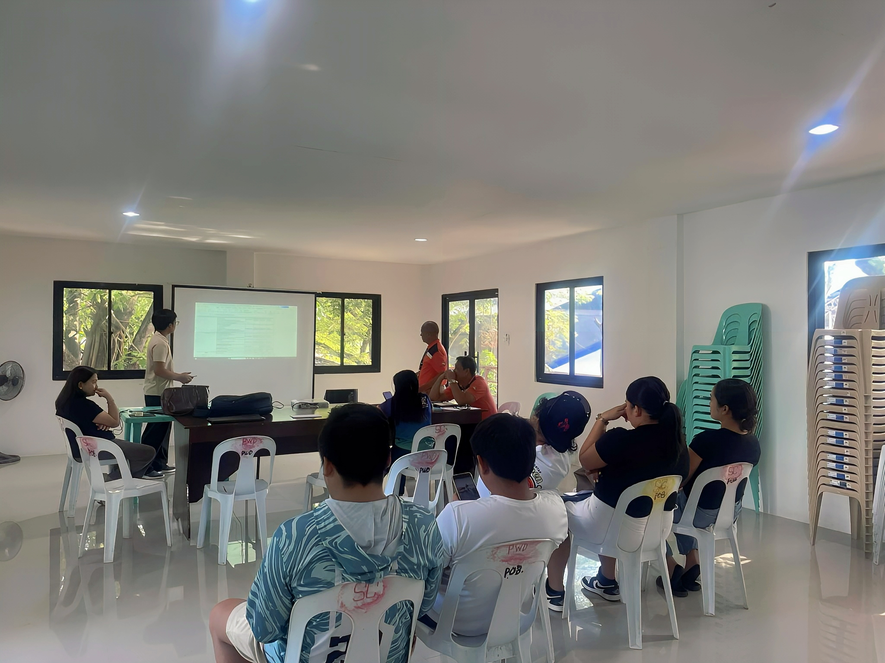
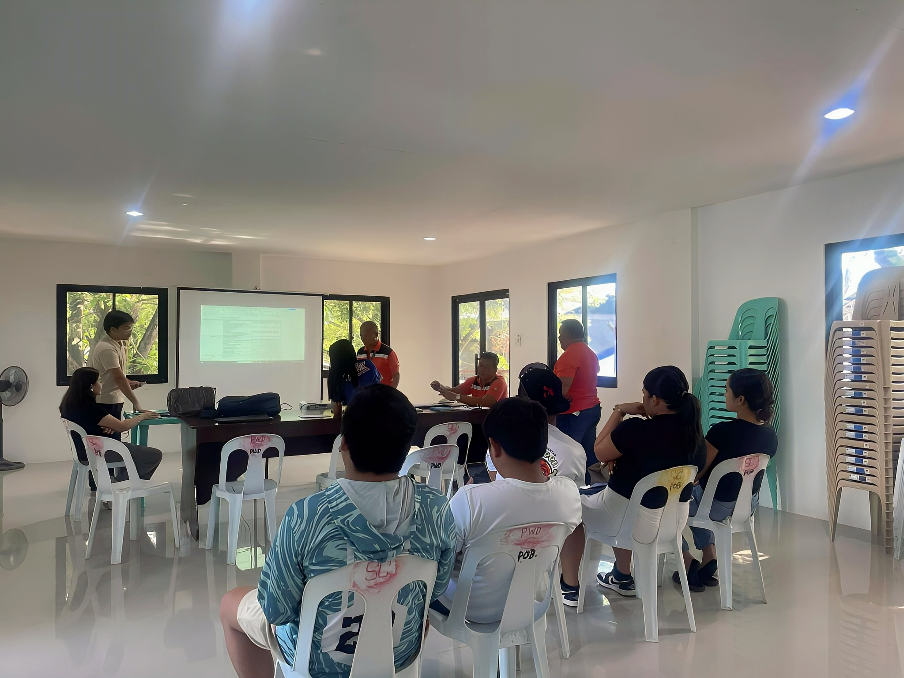
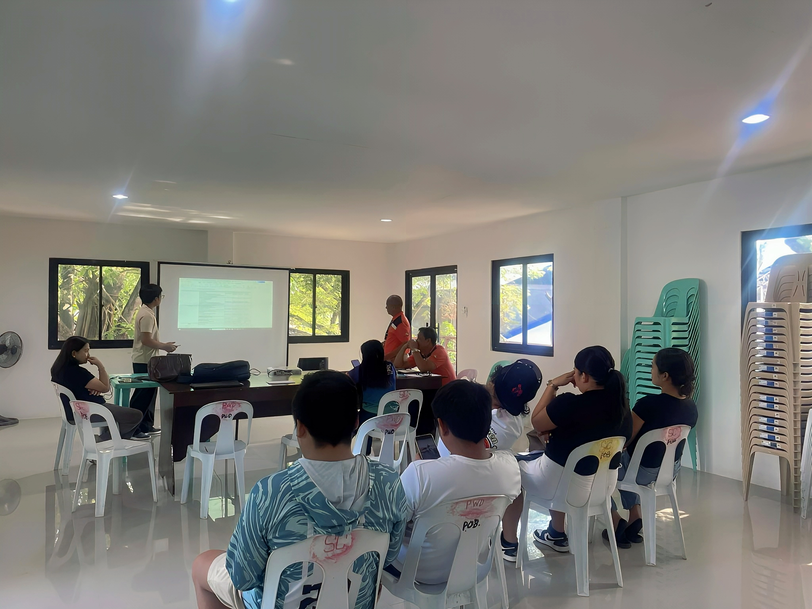
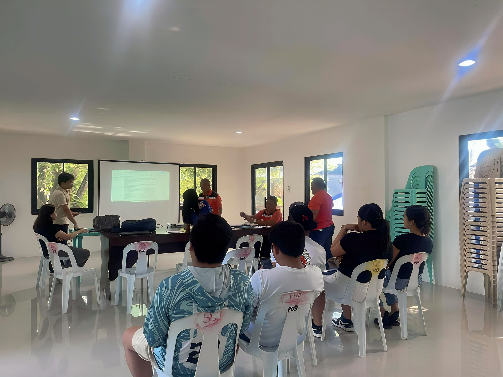
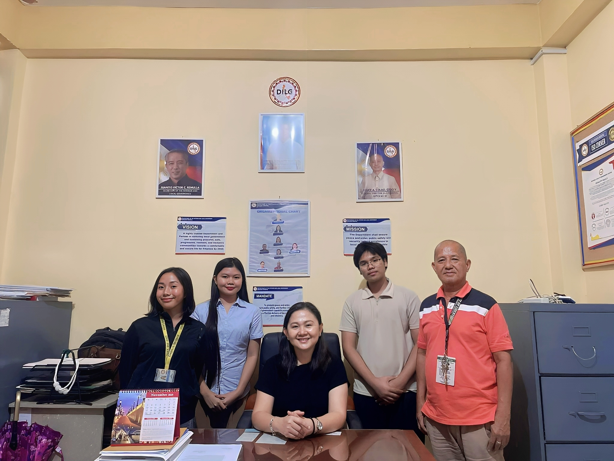
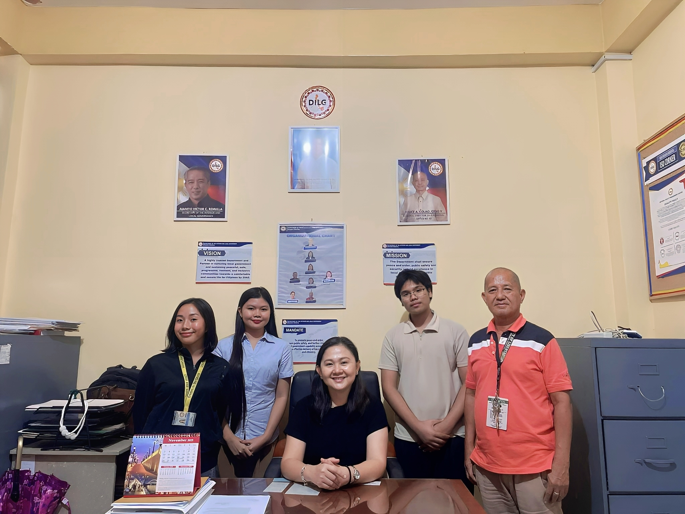

Researcher's Credentials


A descriptive study examining the types, frequency, and resolution procedures of conflicts processed under the Katarungang Pambarangay system in Libertad, Misamis Oriental.
Based solely on documented barangay case files
No interviews, surveys, or opinion-based inputs
Mediation, conciliation, and arbitration procedures
Selected barangays of Libertad, Misamis Oriental
This study focuses on conflict cases officially recorded and processed in selected barangays of the Municipality of Libertad, Misamis Oriental, namely Barangays Dulong, Taytayan, Poblacion, and Lubluban.
It examines the nature of disputes, their frequency, and the procedures employed by barangay officials in resolving these conflicts under the Katarungang Pambarangay system.
All findings are derived exclusively from existing barangay records such as blotter entries, mediation logs, and settlement documents.
 
 
